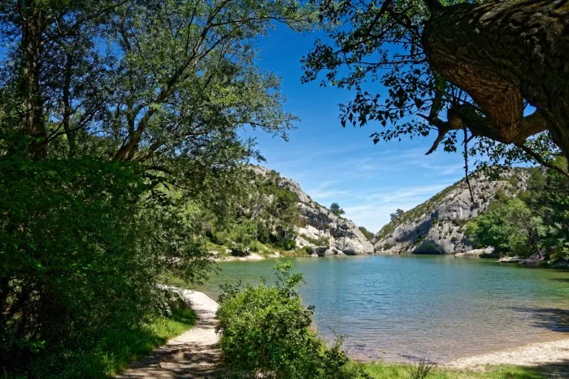

arrow_backAucune indication touristique ne mene ici. C'est pourtant le spot prefere des habitants pour echapper a la foule de Glanum en ete. Un lac de retenue de 4 hectares, niché dans les Alpilles, cerne par la garrigue et le calcaire blanc.
Son nom vient du provencal peirou — "marmite" — en reference a sa forme creusee dans la roche par l'erosion. Construit en 1854 pour alimenter la ville en eau, il est aujourd'hui espace naturel sensible et terrain de jeu des familles saint-remoises.
Les sentiers qui le traversent rejoignent le GR6 et offrent une des plus belles vues sur la chaine des Alpilles — pinede odorante, eau turquoise, silence... a 2 km du centre-ville.